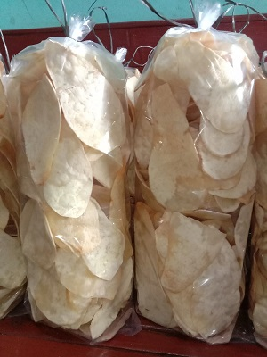

Produk Unggulan Kami
Keripik Singkong
Makanan ringan terbuat dari singkong yang diiris tipis biasanya memiliki rasa asin dan gurih dengan aroma bawang.

Keripik Talas
Keripik Talas adalah makanan ringan yang terbuat dari talas yang diiris tipis, digoreng, dan dibumbui rasa asin.

Keripik Pisang
Keripik Pisang adalah makanan ringan yang terbuat dari irisan pisang yang digoreng dan dibumbui rasa asin atau manis